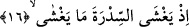

verip cennette ebedî kalacağını söylemesi ve meleklerin de kendisine secde etmesinin
ardından Âdem (a.s.), melek olmaya özlem duymuş ve bu şeytanın aldatmasına sebep
olmuştur. Genişliği semâvât ve arz kadar olan cennet ebedî hayatı ihtivâ ettiği için oraya
giren kimsenin çıkmasının mümkün olmadığı bilinir. Çünkü oradaki varlığın yok olması
diye bir şey yoktur. Allah Teâlâ bu sebeple “Bu kesintisiz bir vergidir” (Hûd, 11/108)
yâni “kesilmez, tükenmez” buyurarak cennetteki bağışlarını tavsîf etmektedir.”
Genişliği semâvât ve arz kadar olan cennetin tabanı, gökleri ve yeri kuşatmış olan
Kürsî olup tavanı da her şeyi kuşatmış olan Arş’dır. Bu cennet güzel ve değerli şeylerle
kuşatılmış olup Âdem (a.s.)’ın kendisinden yeryüzüne indirilmiş olduğu cennet bu
cennet değildir.
Şeyh-i Ekber (k.s.) “Telkîhu’l-ezhân” adlı eserinde de aynı hususları tekrarlar.
Necmuddin’de
et-Te’vilâtü’n-Necmiyye’sinde
bu
cennetin
âşık
mecnûnların
enâniyetleri sebebiyle hapsolundukları el-Melikü’l-Muktedir olan Allah’ın sıdk
makamındaki cennet-i aliyye olduğuna, sıdk ve ihlas kılıcı, riyâzât ve mücâhedet
mızrağı ile öldürülmüş şehid ruhlarının vardığı yer olan Sidre-i Müntehâ adlı
vâhidiyyet ağacı olarak temsil edilen zâhirî hüviyete delâlet ettiğine işâret etmektedir.
16. Sidre’yi kaplayan kaplamıştı.
Bu âyet Sidre’nin ta’zîmini artırmak için getirilmiştir. Âyet-i kerîme’de muzârî
sîgasının kullanılma sebebi; geçmişteki o ânın hikâye kipiyle beyân edilerek
muhatapların tahayyülünde Sidre’nin güzel bir biçimde canlandırılması veya yenilenme
yolu ile bu örtünmenin devamlı oluşunu bildirmek içindir. O halde âyetin mânâsının
takdîri: “Andolsun Muhammed (s.a.), vasfı bilinmeyen, târif edilemeyen bir şekilde
Sidre’nin kaplandığı bir anda Cibrîl’i orada görmüştü”, şeklindedir. Bir hadis-i şerifte:
“Sidreyi çok değişik renklerde birşeyler kaplamıştı. Onu ben tam olarak idrak
edemediğim gibi Allah’ın kullarından hiç biri de bunu tavsif edemez” buyrulmuştur.
[89] Başka hadislerde de: “Altından bir pervanenin onu bürüdüğünü ve her yaprağında
bir meleğin oturup Allah’ı tesbih ettiğini gördüm.”, “Ağaca uçuşan kuşlar gibi bir
topluluğun onu bürüdüğünü gördüm” buyrulmuştur. Bir kavle göre de “Onu altından
bir pervane veya çekirge sürüsünün bürüdüğünü gördüm” şeklinde buyrulmuştur.
Kâşifî onun çevresinde altından pervaneler gibi meleklerin uçtuğunu söylerler, demiştir.
Bir kavle göre de Sidre’yi kaplayan şey, Allah’ın kendisine karşı tecellî ettiği nurların
tesbihâtıdır. Nitekim bu tecellî (Mûsâ a.s. için) dağa da yapılmıştır. Fakat Sidre dağdan
kuvvetli idi. Çünkü dağ darmadağın oldu, fakat Sidre sebât edip yerinden kımıldamadı.
Bunun nedeni, dağın zayıf olan âlem-i mülkde, Sidre’nin ise kuvvetli olan âlem-i
melekûtta bulunuşudur. Bu nedenle Nebî (a.s.) Mûsâ (a.s.)’ın Cebrâîl’i ufuk-ı a’lâda